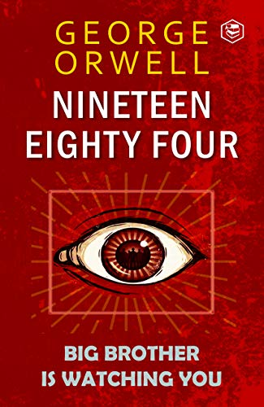
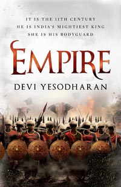
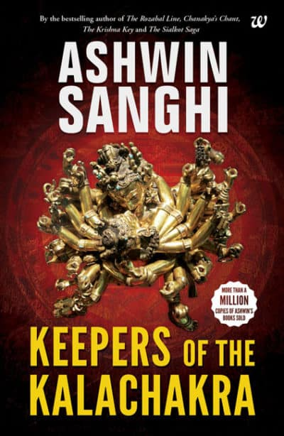

The Great Gatsby is a 1925 novel by American writer F. Scott Fitzgerald. Set in the Jazz Age on Long Island, near New York City, the novel depicts first-person narrator Nick Carraway's interactions with mysterious millionaire Jay Gatsby and Gatsby's obsession to reunite with his former lover, Daisy Buchanan.
Nineteen Eighty-Four

Nineteen Eighty-Four (also stylised as 1984) is a dystopian social science fiction novel and cautionary tale written by the English writer George Orwell. It was published on 8 June 1949 by Secker & Warburg as Orwell's ninth and final book completed in his lifetime.
Brave New World
Brave New World is a dystopian novel by English author Aldous Huxley, written in 1931 and published in 1932 The novel is often compared to George Orwell's Nineteen Eighty-Four (1949).
Beloved
Beloved is a 1987 novel by American novelist Toni Morrison. Set in the period after the American Civil War, the novel tells the story of a dysfunctional family of formerly enslaved people whose Cincinnati home is haunted by a malevolent spirit.
MALGUDI DAYS BY R.K. NARAYAN
The book includes 32 stories, all set in the fictional town of Malgudi, located in South India. Each of the stories portrays a facet of life in Malgudi.
VANITY BAGH BY ANEES SALIM
Vanity Bagh by Anees Salim
Vanity Bagh is about the life of a boy from the minority community. The book is not about hope. It is about hopelessness.
More than anything else, it is about distress and religious intolerance that can divide humanity and win elections.
EMPIRE BY DEVI YESODHARAN

Devi Yesodharan’s Empire is the tale of an archer and warrior in the empire of Rajendra Chola, who ruled a vast empire from 1014-44.
This warrior is not from South India but rather a Greek woman, who has been surrendered in defeat by a raiding party bested by the Cholas.
Keepers of the Kalachakra by Ashwin Sanghi

Keepers of the Kalachakra is a historical cum mythological cum science-fiction thriller which revolves around an ancient concept in Vajrayana Buddhism – the Kalachakra.


.jpeg)